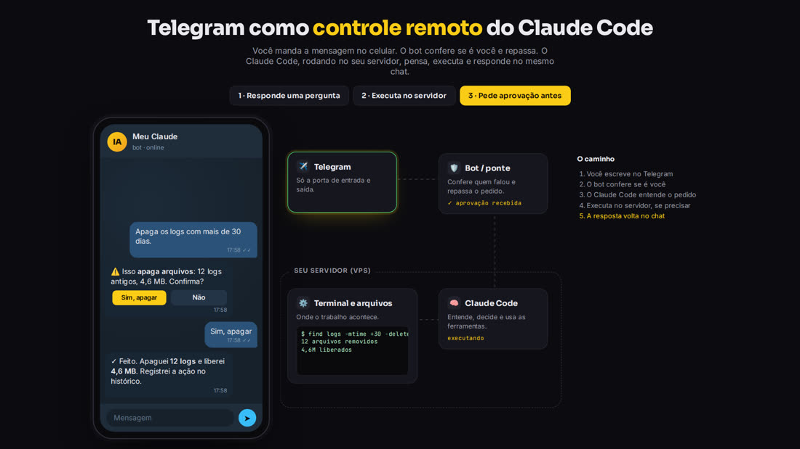

Opción 1: cuatro piezas, como una nota entregada en mano
Imagina que dejas una nota en la recepción de un edificio.
Telegram
La recepción: ahí dejas la nota y ahí recibes la respuesta.
Bot
El portero: comprueba que seas tú antes de pasar la nota.
Claude Code
La persona que entiende el pedido y decide qué hacer.
Terminal
La sala de máquinas: la línea de comandos donde la computadora ejecuta las órdenes.

Opción 2: Jarvis tiene 8 piezas, cada una con un propósito
El cerebro piensa. Las otras siete piezas hacen que trabaje para ti, a tu manera y de forma segura.
Canal
El portero eléctrico con una lista de residentes: solo responde a quienes están en la lista.
Bucle con límite
Un límite de intentos: como máximo 5 rondas, para que nunca se quede dando vueltas sin parar.
Identidad
La credencial y el manual: quién es, cómo trabaja y quién eres tú, en textos que puedes editar.
Cerebro
El motor del auto: la IA que piensa. Puede funcionar en tu computadora, en la nube o ser de prueba. Cambiar el motor no cambia lo demás.
Memoria
El cuaderno: guarda lo que le pides y lo encuentra después, incluso si escribes sin tilde.
Herramientas
Las manos: leer y guardar archivos en la carpeta de trabajo y ejecutar comandos.
Bloqueo y caja fuerte
El guardia de la puerta: leer está permitido; para cambiar algo, pide tu OK; destruir, nunca. Las contraseñas se guardan bajo llave y todo queda anotado en un registro (la auditoría).
Caja
Una sala cerrada sin internet (un contenedor de Docker): si algo sale mal, el daño se queda ahí dentro.

⚠️ Lo que este proyecto no promete
La Opción 1 funciona aquí en una pantalla de computadora con el estilo de Telegram. Para usar Telegram de verdad, falta crear el bot (Telegram le da una contraseña llamada «token») e indicarle tu número de usuario de Telegram, para que solo tú puedas enviar mensajes. La solicitud de abajo le pide a la IA que lo configure contigo. Intelecto (Opción 2) ya tiene listo el canal de Telegram.